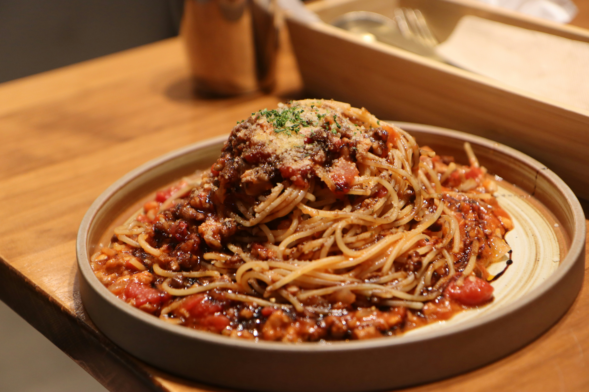

Back to the Odin Recipes.
Pasta Bolognese

Description
Few dishes are as comforting and satisfying as a hearty bowl of pasta Bolognese. With layers of rich, savory flavor, it’s a dish that never disappoints.
This pasta Bolognese recipe is your ticket to a cozy, satisfying meal that the whole family will love.
Ingredients
- 2 medium yellow onions, peeled and chopped into 1-in (2.5-cm) chunks
- 2 carrots, peeled and chopped into 1-in (2.5-cm) chunks
- 2 celery stalks, cut into 1-in (2.5-cm) chunks
- 3 cloves garlic, very roughly chopped
- 2 tablespoons extra-virgin olive oil
- 1⅓ lb 85% lean ground beef
- 4 oz pancetta, finely diced
- 1 teaspoon salt (plus more for pasta water)
- ½ teaspoon freshly ground black pepper
- ½ cup dry red wine
- 2 cups beef broth
- 1 (14-oz) can crushed tomatoes (about 1¾ cups)
- ½ teaspoon dried oregano
- 1 cup whole milk
- 1 lb pasta, for serving
- Handful chopped fresh basil or parsley, for serving (optional)
- Freshly grated Parmigiano-Reggiano, for serving (optional)
Steps
- Place the onions in the bowl of a food processor fitted with the metal blade. Pulse until very finely chopped but not puréed. Transfer the onions to a separate bowl, then add the carrots, celery, and garlic to the food processor. Pulse until finely chopped.
- Heat the oil in a large heavy pot or Dutch oven over medium-high heat. Add the finely chopped onions and vegetable mixture and cook, stirring frequently, until soft, 8 to 10 minutes. Lower the heat if the vegetables start to brown.
- Add the ground beef, pancetta, salt, and pepper and cook over medium-high heat, breaking up the meat with a wooden spoon, until the meat is no longer pink, 5 to 10 minutes.
- Add the wine and cook until it is almost evaporated, 1 to 2 minutes.
- Add the broth, crushed tomatoes and oregano. Bring to a gentle boil, then reduce heat to low. Cover with the lid slightly ajar and simmer for 1 hour and 30 minutes.
- Add the milk to the sauce and stir to combine. Cover with the lid slightly ajar and simmer until the milk is absorbed and the meat is tender, about 35 minutes. If the sauce looks greasy, use a soup spoon to skim the fat off of the top. Remove the pan from the heat and cover to keep warm while you make the pasta.
- Bring a large pot of salted water to a boil. Cook the pasta according to package instructions. Before straining, ladle out 1 cup (240 ml) of the pasta water into a bowl or measuring cup and set aside. Drain the pasta, then add to the sauce. Toss with tongs, adding the reserved pasta water little by little if the pasta seems dry. Taste and adjust seasoning with salt and pepper if necessary. Divide the pasta into serving bowls and sprinkle with fresh herbs, if using. Pass the grated Parmigiano Reggiano at the table.